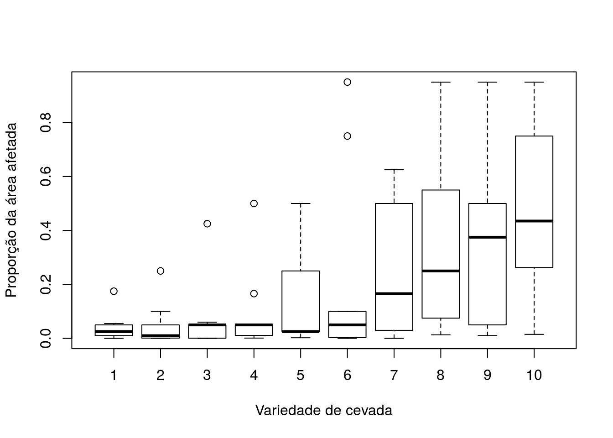
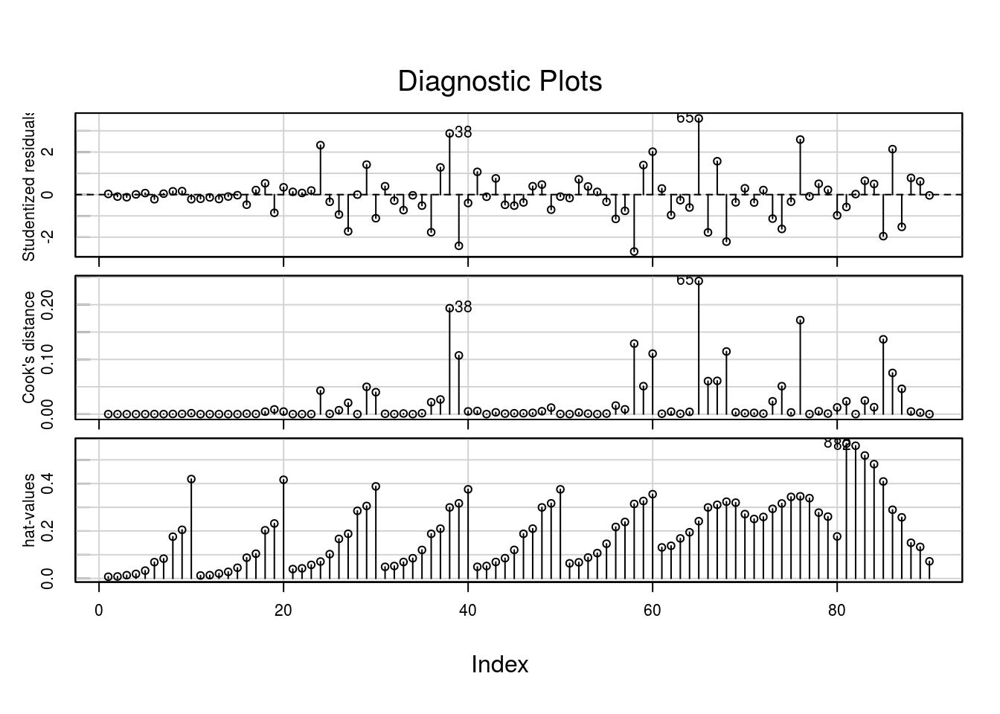

Exemplo - quase-verossimilhança.
Incidência de um tipo de mancha observada em folhas da cevada. A variável resposta é a proporção da área foliar afetada pela mancha (blotch), tratando-se, portanto, de uma proporção contínua. As variáveis explicativas são a variedade da cevada (variety, fator com 10 níveis) e o local de plantio (site, fator com 9 níveis). Os dados foram extraídos de MccCullagh e Nelder, 1989.
Se o carregamento dos dados não funcionar, salve o arquivo txt em sua máquina e importe localmente.
## Obs blotch site variety
## Min. : 1.00 Min. :0.0000 Min. :1 Min. : 1.0
## 1st Qu.:23.25 1st Qu.:0.0125 1st Qu.:3 1st Qu.: 3.0
## Median :45.50 Median :0.0500 Median :5 Median : 5.5
## Mean :45.50 Mean :0.2072 Mean :5 Mean : 5.5
## 3rd Qu.:67.75 3rd Qu.:0.3550 3rd Qu.:7 3rd Qu.: 8.0
## Max. :90.00 Max. :0.9500 Max. :9 Max. :10.0cevada$variety <- factor(cevada$variety)
cevada$site <- factor(cevada$site)
with(cevada, boxplot(blotch ~ variety, xlab = 'Variedade de cevada',
ylab = 'Proporção da área afetada'))
Vamos ajustar um modelo de quasi-verossimilhança para a proporção da área infectada. Vamos usar função de ligação logito \(log(p/(1-p))\) e função de variância \(V(p) = \phi*p*(1-p)\)
ajuste1 <- glm(blotch ~ site + variety, family = quasi(link = 'logit', variance = "mu(1-mu)"),
data = cevada)
summary(ajuste1)##
## Call:
## glm(formula = blotch ~ site + variety, family = quasi(link = "logit",
## variance = "mu(1-mu)"), data = cevada)
##
## Deviance Residuals:
## Min 1Q Median 3Q Max
## -0.64431 -0.13546 -0.02061 0.09628 0.81005
##
## Coefficients:
## Estimate Std. Error t value Pr(>|t|)
## (Intercept) -8.0546 1.4220 -5.664 2.84e-07 ***
## site2 1.6391 1.4433 1.136 0.259881
## site3 3.3265 1.3492 2.465 0.016069 *
## site4 3.5822 1.3445 2.664 0.009512 **
## site5 3.5838 1.3444 2.666 0.009479 **
## site6 3.8932 1.3402 2.905 0.004877 **
## site7 4.7299 1.3348 3.544 0.000698 ***
## site8 5.5226 1.3346 4.138 9.39e-05 ***
## site9 6.7945 1.3407 5.068 3.00e-06 ***
## variety2 0.1501 0.7237 0.207 0.836293
## variety3 0.6895 0.6724 1.025 0.308599
## variety4 1.0481 0.6494 1.614 0.110919
## variety5 1.6147 0.6257 2.581 0.011897 *
## variety6 2.3711 0.6090 3.893 0.000219 ***
## variety7 2.5712 0.6065 4.240 6.55e-05 ***
## variety8 3.3419 0.6015 5.556 4.39e-07 ***
## variety9 3.4999 0.6014 5.820 1.51e-07 ***
## variety10 4.2529 0.6042 7.038 9.39e-10 ***
## ---
## Signif. codes: 0 '***' 0.001 '**' 0.01 '*' 0.05 '.' 0.1 ' ' 1
##
## (Dispersion parameter for quasi family taken to be 0.08878102)
##
## Null deviance: 40.8029 on 89 degrees of freedom
## Residual deviance: 6.1264 on 72 degrees of freedom
## AIC: NA
##
## Number of Fisher Scoring iterations: 5plot(predict(ajuste1), rstandard(ajuste1, type = 'pearson'), pch = 20,
main = 'V(mu)=mu(1-mu)', xlab = 'Fitted values', ylab = 'Residuals')A relação média variância não é constante, sendo que ela parece aumentar conforme a média e diminuir novamente Podemos experimentar uma nova função de variância, dada pelo quadrado da primeira \(V(\mu) = \mu^2 (1-\mu)^2\). Essa função de ligação está implementada no pacote gnm, sob o nome wedderburn.
##
## Call:
## glm(formula = blotch ~ site + variety, family = wedderburn, data = cevada)
##
## Deviance Residuals:
## Min 1Q Median 3Q Max
## -3.1807 -0.6293 0.0000 0.3888 1.9711
##
## Coefficients:
## Estimate Std. Error t value Pr(>|t|)
## (Intercept) -7.92251 0.44463 -17.818 < 2e-16 ***
## site2 1.38306 0.44463 3.111 0.00268 **
## site3 3.86009 0.44463 8.682 8.19e-13 ***
## site4 3.55697 0.44463 8.000 1.53e-11 ***
## site5 4.10836 0.44463 9.240 7.48e-14 ***
## site6 4.30535 0.44463 9.683 1.13e-14 ***
## site7 4.91810 0.44463 11.061 < 2e-16 ***
## site8 5.69486 0.44463 12.808 < 2e-16 ***
## site9 7.06759 0.44463 15.896 < 2e-16 ***
## variety2 -0.46722 0.46868 -0.997 0.32216
## variety3 0.07883 0.46868 0.168 0.86691
## variety4 0.95420 0.46868 2.036 0.04544 *
## variety5 1.35275 0.46868 2.886 0.00514 **
## variety6 1.32868 0.46868 2.835 0.00594 **
## variety7 2.34065 0.46868 4.994 3.99e-06 ***
## variety8 3.26268 0.46868 6.961 1.30e-09 ***
## variety9 3.13558 0.46868 6.690 4.10e-09 ***
## variety10 3.88737 0.46868 8.294 4.33e-12 ***
## ---
## Signif. codes: 0 '***' 0.001 '**' 0.01 '*' 0.05 '.' 0.1 ' ' 1
##
## (Dispersion parameter for wedderburn family taken to be 0.9884572)
##
## Null deviance: 370.523 on 89 degrees of freedom
## Residual deviance: 66.267 on 72 degrees of freedom
## AIC: NA
##
## Number of Fisher Scoring iterations: 13par(mfrow = c(1,2))
plot(predict(ajuste1), rstandard(ajuste1, type = 'pearson'), pch = 20,
main = 'V(mu)=mu(1-mu)', xlab = 'Fitted values', ylab = 'Residuals')
plot(predict(ajuste2), rstandard(ajuste2, type = 'pearson'), pch = 20,
main = 'V(mu)=mu2(1-mu)^^2', xlab = 'Fitted values', ylab = 'Residuals')
## Warning in plot.window(...): relative range of values ( 34 * EPS) is small
## (axis 2)O modelo com função de variância \(V(\mu) = \mu^2(1-\mu)^2\), aparentemente, proporciona melhor ajuste. Embora algum cuidado seja necessário quanto a pontos potencialmente influentes.
Observe que a estimativa do parâmetro de dispersão, neste segundo ajuste, é muito próxima de 1, indicando que a função de variância proposta absorve praticamente toda a variação dos dados.